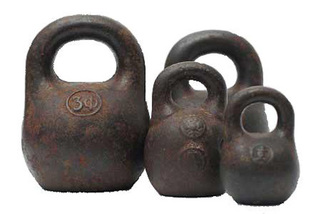

Welcome to the Workout of the Day Generator for Kettlebell Enthusiasts
Kettlebells burn a greater amount of fat in less time than many traditional exercises and they do
this without building bulk! Of course there are some kettlebell exercises designed specifically to
build bulk, but these are not mandatory if you don’t want bulk!
15 minutes on an elliptical machine burns between 50-125 calories while 15 minutes using
kettlebells will burn around 300 calories!! This makes kettlebells a fantastic component to your
fitness and weight loss regimen!
Many who spend a large portion of their day sitting down have lost strength in their lower extremities,
especially in the hammocks and buttock. Kettlebells improve buttocks and hammock strength and thus improves
lower back conditioning.

Both Russia and the highlands of Scotland claim to have originated kettlebells. In Scotland, a popular
game consisted of pushing rocks across a frozen lake with brooms. By casting the rocks in iron, they were
easier to handle and the first middle ages kettlebell was born!
In Russia, Kettlebells were originally used by farmers as a counter weight to grains and other produce when
selling at the market.
Originally, in Russia, Kettlebells were used as counter weights against produce. 1 pood = 1 kettlebell of
36 pounds. Measurements were counted in 1 pood, 1.5 pood, and 2 poods.